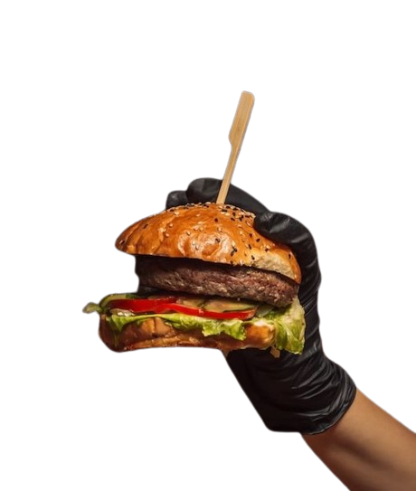

Vem Comer Bem!

Os Melhores desde 2014
Bem-vindo à Hamburgueria Jodel, o paraíso dos amantes de hambúrgueres onde cada mordida é uma experiência única! Localizada no coração da cidade, a Hamburgueria Jodel é mais do que apenas um lugar para saciar sua fome; é um destino gastronômico que promete satisfazer até os paladares mais exigentes.
